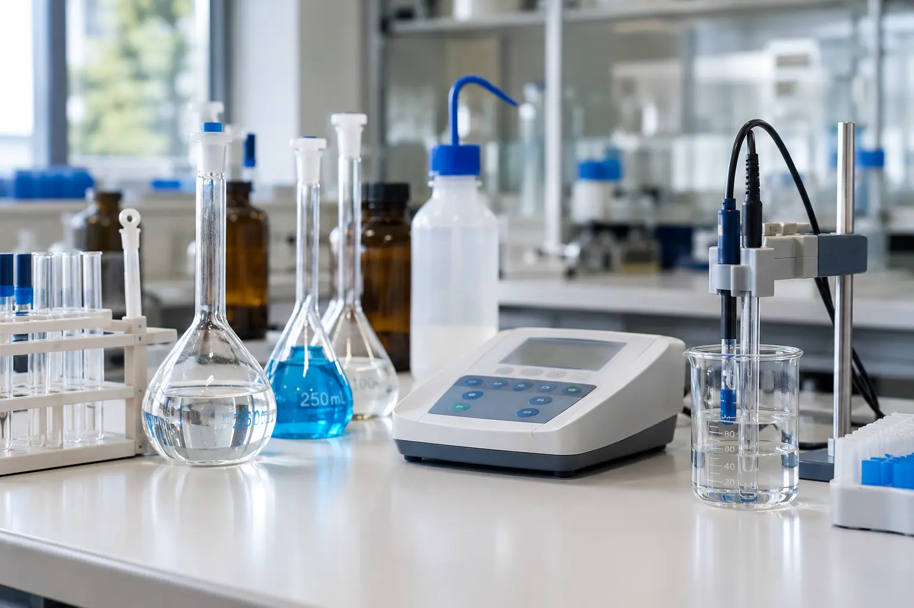

Química básica
Cómo calcular el pH de ácidos y bases fuertes y débiles
Las fórmulas para calcular el pH de ácidos y bases fuertes y débiles, la tabla ICE, el criterio del 5 % y cuatro ejemplos resueltos: HCl, NaOH, ácido acético y amoníaco.

Para calcular el pH se aplica pH = −log[H+]. En un ácido fuerte, [H+] es igual a su concentración (HCl 0,0100 M → pH 2,00); en uno débil se calcula con Ka: [H+] ≈ √(Ka·C) (ácido acético 0,100 M → pH 2,88). En una base se calcula el pOH y pH = 14,00 − pOH. Puedes comprobar cualquier caso con la calculadora de pH.
Fórmula del pH y del pOH
El pH mide la acidez de una solución (o disolución) acuosa. Se define como el logaritmo negativo de la actividad de los iones hidrógeno; en soluciones diluidas la actividad se aproxima a la concentración molar, y así se trabaja en la práctica. El pOH se define igual con los iones hidróxido (OH−).
pH + pOH = pKw = 14,00 (a 25 °C)
La suma 14,00 solo vale a 25 °C: pKw cambia con la temperatura (14,94 a 0 °C, 13,62 a 37 °C). La diferencia entre actividad y concentración también existe: en HCl 0,010 M el pH medido con un pHmetro es ≈ 2,04, no 2,00. Para los cálculos de laboratorio habituales, la aproximación es suficiente.
Cómo calcular el pH de un ácido o una base fuerte
Los ácidos fuertes monopróticos, como el HCl, el HNO3 o el HClO4, se disocian por completo: [H+] = C. Con las bases fuertes (NaOH, KOH) ocurre lo mismo con [OH−]: se calcula el pOH y después el pH.
El ácido sulfúrico es una excepción: solo su primera disociación es completa; la segunda (HSO4− ⇌ H+ + SO42−) tiene Ka2 ≈ 1,0 × 10−2. Por eso, en H2SO4 0,0100 M, [H+] queda entre C y 2C y el pH es 1,85, no 2,00 ni 1,70. Sobre ácidos con más de un protón, ver también las diferencias entre normalidad y molaridad.
Esta regla deja de valer en soluciones muy diluidas (por debajo de ~10−6 M), donde los H+ que aporta el agua ya no son despreciables: HCl 1,0 × 10−8 M tiene pH 6,98, no 8,00.
Cómo calcular el pH de un ácido débil: tabla ICE y Ka
Los ácidos débiles, como el ácido acético, solo se disocian en parte. La mayoría de los ácidos y bases orgánicos (ácidos carboxílicos, fenoles, aminas) son débiles. El equilibrio se describe con la constante de acidez Ka, cuyos valores para los ácidos más comunes están en la tabla de pKa y Ka:
Ka = [H+][CH3COO−] / [CH3COOH]
La tabla ICE (Inicial, Cambio, Equilibrio) ordena las concentraciones, llamando x a la parte que se disocia:
| CH3COOH | H+ | CH3COO− | |
|---|---|---|---|
| Inicial | C | 0 | 0 |
| Cambio | −x | +x | +x |
| Equilibrio | C − x | x | x |
Al sustituir en Ka queda Ka = x² / (C − x), una ecuación cuadrática cuya solución es:
Aproximación si x es pequeño frente a C: [H+] ≈ √(Ka·C)
La aproximación es válida cuando la parte disociada es menor del 5 % de C, lo que en la práctica ocurre si C/Ka es mayor que unos 400. Conviene comprobarlo siempre al final: % disociación = x / C × 100.
pH de una base débil: el caso del amoníaco
Con una base débil el procedimiento es el mismo, pero con la constante de basicidad Kb y [OH−]. Si solo se conoce el Ka del ácido conjugado (por ejemplo, el del ion amonio, NH4+), para un par conjugado se cumple Ka·Kb = Kw (1,0 × 10−14 a 25 °C).
[OH−] ≈ √(Kb·C) → pOH → pH = 14,00 − pOH
Ejemplos resueltos
[H+] = 0,0100 M → pH = −log(0,0100) = 2,00
[OH−] = 0,0100 M → pOH = 2,00 → pH = 14,00 − 2,00 = 12,00
Aproximación: [H+] = √(1,75 × 10−5 × 0,100) = 1,32 × 10−3 M → pH = 2,88
Comprobación: 1,32 × 10−3 / 0,100 × 100 = 1,3 %, menor del 5 %, así que la aproximación es válida. La ecuación cuadrática da el mismo pH, 2,88.
Aproximación: [OH−] = √(1,8 × 10−5 × 0,10) = 1,34 × 10−3 M → pOH = 2,87 → pH = 11,13
Solución exacta: [OH−] = 1,33 × 10−3 M → pOH = 2,88 → pH = 11,12. La disociación es del 1,3 %, así que la diferencia es solo de redondeo.
Los cuatro resultados se pueden comprobar con la calculadora de pH, que resuelve el equilibrio de forma exacta e indica el % de disociación.
Cuándo falla la aproximación √(Ka·C)
La aproximación falla cuando el ácido está poco concentrado o su Ka es grande en relación con C. Por ejemplo, con ácido acético 1,0 × 10−3 M:
Aproximación: [H+] = 1,32 × 10−4 M → pH 3,88, pero eso supone un 13,2 % de disociación: más del 5 %, así que no vale.
Ecuación cuadrática: [H+] = 1,24 × 10−4 M → pH = 3,91 (12,4 % de disociación).
Lo mismo pasa con ácidos de Ka mayor: el HF 0,10 M (pKa 3,17) se disocia un 7,9 % y su pH es 2,10. En soluciones extremadamente diluidas (≲ 10−6 M) ni siquiera la cuadrática basta: hay que incluir en el balance los H+ que aporta el agua.
Errores comunes al calcular el pH
1. Aplicar −log C a un ácido débil
Para ácido acético 0,100 M daría pH 1,00 en lugar de 2,88: el ácido débil libera muchos menos H+ que su concentración.
2. Olvidar pasar del pOH al pH
Con bases, la fórmula da el pOH. Informar 2,00 como pH de NaOH 0,0100 M es un error frecuente: el pH es 12,00.
3. Usar la aproximación sin comprobar el 5 %
El cálculo con √(Ka·C) siempre da un número, aunque no sea válido. Hay que calcular el % de disociación al final y, si supera el 5 %, resolver la cuadrática.
4. Tratar el H2SO4 como si liberara 2 H+ por completo
Su segunda disociación es parcial: tomar [H+] = 2C subestima el pH (1,70 en lugar de 1,85 para 0,0100 M).
5. Usar pH + pOH = 14 a cualquier temperatura
A 37 °C, pKw = 13,62: el agua neutra tiene pH 6,81, no 7,00.
Si a un ácido débil se le añade su sal (la base conjugada), la solución pasa a ser un tampón (solución amortiguadora o buffer) y el pH se calcula con la ecuación de Henderson-Hasselbalch: ver qué es el pKa y cómo usar buffers o la calculadora de buffers.
Preguntas frecuentes
¿Cómo se calcula el pH de un ácido fuerte?
Se toma la concentración del ácido como concentración de H+ y se aplica pH = −log[H+]. Para HCl 0,0100 M, [H+] = 0,0100 mol/L y el pH es 2,00. La regla vale para ácidos monopróticos como HCl, HNO3 o HClO4 en concentraciones mayores de unos 10−6 M; por debajo, los H+ que aporta el agua dejan de ser despreciables.
¿Por qué el pH de un ácido débil no es −log C?
Porque un ácido débil solo se disocia en parte. Si se aplicara −log C al ácido acético 0,100 M saldría pH 1,00, pero solo se disocia alrededor del 1,3 % de las moléculas: [H+] ≈ 1,32 × 10−3 M y el pH real es 2,88.
¿Cómo se calcula el pH de una base débil como el amoníaco?
Se usa Kb en lugar de Ka para obtener [OH−], después el pOH y por último pH = 14,00 − pOH (a 25 °C). Para NH3 0,10 M con Kb = 1,8 × 10−5, [OH−] ≈ 1,33 × 10−3 M, el pOH es 2,88 y el pH, 11,12. Si solo se conoce el Ka del ácido conjugado (NH4+), Kb = Kw / Ka.
¿Cuándo no se puede usar la aproximación [H+] = √(Ka·C)?
Cuando la parte disociada supera el 5 % de la concentración inicial, lo que en la práctica ocurre si C/Ka es menor que unos 400. En ese caso se resuelve la ecuación cuadrática de la tabla ICE. Por ejemplo, el ácido acético 1,0 × 10−3 M se disocia un 12 % y su pH es 3,91, no 3,88.
¿Qué pH tiene el agua destilada?
En teoría, 7,00 a 25 °C. En la práctica, el agua destilada expuesta al aire suele medir alrededor de 5,6, porque disuelve CO2 y forma ácido carbónico. Por eso no sirve como referencia de pH 7 para calibrar un pHmetro: para eso se usan soluciones tampón certificadas.
Fuentes consultadas
- Skoog, D. A., West, D. M., Holler, F. J. y Crouch, S. R. (2014). Fundamentos de química analítica (9.ª ed.). Cengage Learning.
- Harris, D. C. (2016). Análisis químico cuantitativo (9.ª ed.). Reverté.
- Rumble, J. R. (ed.). CRC Handbook of Chemistry and Physics (103.ª ed.). CRC Press. (Constantes de disociación y producto iónico del agua en función de la temperatura.)
- ISO 3696:1987. Water for analytical laboratory use — Specification and test methods (pH 5,0–7,5 para el agua de grado 3).
¿Qué pH tiene tu solución? Introduce la concentración y, si es débil, su Ka o Kb.
Calcular el pH →